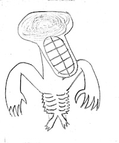

escape
This website was created through use of html and style.css. It is a draft of a possibly even bigger website, and a showcase of the skills I have developed involving html. Of course, a lot of styling choices made here were not perfect, and could be improved on heavily. However, I would say it does it's job just fine, and was an alright start to learning how to code websites.

Click here to open website